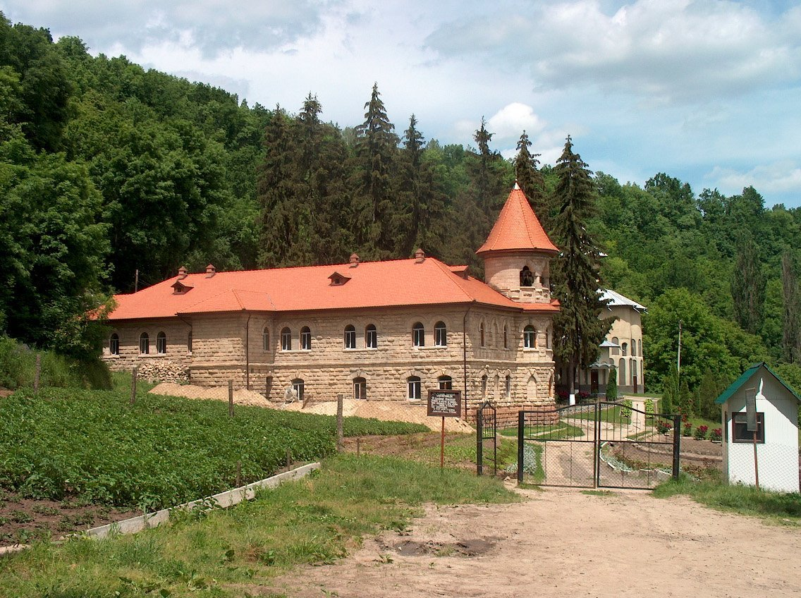

Biserici și Mănăstiri
Biserici și Mănăstiri
Mănăstirea Căpriana
Intr-o zona pitoreasca de codru, la 40 km nord-vest de Chisinau, se gaseste una dintre cele mai vechi manastiri din Moldova – Capriana (intemeiata in 1429). Ea a fost timp indelungat resedinta mitropolitului Moldovei, a fost ctitorita de domnitori, printre ei si Stefan cel Mare, aici au trait cronicarul Eftimie si unul dintre primii poeti a Moldovei – Chiprian. La inceput manastirea era construita in totalitate din lemn, ca mai tarziu, in 1545 sa fie inaltata in piatra biserica de vara „Adormirea Maicii Domnului”. In 1840 este inaltata biserica „Sf. Gheorghe” si la 1903 “Sf. Nicolae”. La Capriana a existat si cea mai mare biblioteca manastireasca din Moldova cu pretioase daruri domnesti. Fiind inchisa si devastata in anii postbelici, ea se redeschide printre primele in 1989, devenind foarte curand un simbol al renasterii nationale. Manastirea poate fi vizitata zilnic. Printre alte obiective care pot fi vizitate in zona numim rezervatia peisagistica “Capriana-Scoreni”, Stejarul lui Stefan cel Mare si cea mai veche rezervatie din Moldova – „Codri”.
Mănăstirea Hâncu
In 1678, intr-o zona de codru, la izvorul raului Cogalnic (cca. 55 km vest de Chisinau), marele stolnic Mihail Hancu infiinteaza, la rugamintea fiicei sale, o manastire de maici. Bisericile din lemn si chiliile monahale in secolul XVII sunt deseori devastate de navalirea tatarilor. Din aceasta cauza manastirea „Sf. Parascheva” periodic ramane pustie. La 1835 este zidita din piatra biserica de vara in stil rus-bizantin, mai tarziu la 1841 se inalta biserica de iarna. In perioada 1956-1990 manastirea este inchisa de autoritatile sovietice, iar pe teritoriul ei a functionat o baza de odihna si de tratament a Ministerului Sanatatii. In 1990, la cererea localnicilor din satele vecine, manastirea Hancu este redeschisa, devenind in scurt timp una dintre cele mai bine amenajate si vizitate de turisti comunitati monahale. In preajma manastirii se gasesc mai multe izvoare bogate in apa, unul dintre ele are o mineralizare sporita. Manastirea poate fi vizitata zilnic. Ghid local, taxe de intrare, spatii de cazare disponibile.
Mănăstirea Hârjeuca
Manastirea Hirjeuca este situata la 70 km nord-vest de Chisinau, in satul Hirjeuca. Pentru prima data in aceasta zona de codru a aparut o comunitate monahala in anul 1740, ceva mai tarziu sunt construite biserici si chilii din lemn. In prima jumatate a secolului XIX manastirea Hirjeuca cunoaste o perioada de inflorire, fiind plasata intr-un parc amenajat cu lacuri, havuzuri si alei. Biserica de vara „Inaltarea Domnului” a fost zidita in 1836, care si prin structura ei este foarte asemanatoare Catedralei din Chisinau cu o arhitectura clasica. Mai tarziu este construita si biserica de iarna „Sf. Spiridon”. Manastirea avea o impresionanta biblioteca si o scoala pentru copiii clericilor. In 1922 biserica „Sf. Spiridon” este pictata in interior de vestitul pictor Pavel Piscareov. Insa in perioada sovietica manastirea este inchisa si pe teritoriul ei s-a deschis o statiune de tratament. In 1993 manastirea se redeschide. Aici se mai gaseste Izvorul „Tineretii”, care are proprietati curative deosebite. Vizitatorii acestei zone pot face o excursie prin padurea de aici, considerata drept un valoros monument natural botanic. Manastirea poate fi vizitata zilnic.
Mănăstirea Japca
Localitatea Japca (160 km nord de Chisinau) este bine cunoscuta vizitatorilor Moldovei prin manastirea de maici de aici, care a fost singura functionala in perioada sovietica. Comunitatea monahala de la intemeiere, in sec. XVII, si-a construit asezamintele foarte asemanatoare unor fortificatii. Prima datare a schitului este atribuita anului 1693, cand intemeietorii traiau in chiliile rupestre si oficiau slujbe in biserica din stanca. In anul 1770 calugarii se aseaza pe locul actualei manastiri. In perioada aceea incep constructiile si amenajerile gospodaresti. Mai apoi se fondeaza o biblioteca bogata. Pe la inceputul sec. XIX se construiesc bisericile din piatra. Cea mai importanta biserica din manastire este reconstruita in repetate randuri. In zilele noastre aceasta biserica are trei altare: „Inaltarea Domnului”, „Schimbarea la Fata” si „Sfanta Cruce”. Manastirea poate fi vizitata zilnic. Printre alte obiective nu mai putin interesante, din zona, sunt: monumentul geo-paleontologic „Stanca Japca”, un izvor de apa minerala, rezervatii peisagistice la Rascov si Valea Adanca, fortificatii antice si statiuni paleolitice la Socola si Rascov. In orasul Camenca functioneaza sanatoriul „Nistru”.
Mănăstirea Noul-Neamţ(Chiţcani)

În secolele XV-XVII teritoriul Moldovei era acoperit de o reţea deasă de mănăstiri şi schituri, graţie amplei activităţi de ctitorire din partea unor domnitori ca Alexandru cel Bun, Stefan cel Mare, Petru Rareş s.a. În total, pe teritoriul Principatelor Române funcţionau 70 de aşezăminte monastice. Dintre mănăstirile de călugări, cel mai însemnat a fost lăcaşul monastic Neamţ. Lavra Neamţ, înfiinţată în a doua jumătate a sec. XIV-lea, este una dintre cele mai vechi şi mai bogate mănăstiri din Moldova, care pe parcursul a cinci secole şi-a afirmat însemnătatea sa ca mare centru de cultură, şi care şi-a dus faima tradiţiilor pînă departe dincolo de hotarele Moldovei. Mănăstirea Neamţ a fost înfiinţată de monahii Sofronie, Pimen şi Silvan. După o versiune, aceşti călugări au venit în munţii Moldovei de la sud, posibil să fi fost ucenici ai sfîntului Nicodim de la Tismana. După o altă versiune ei ar fi venit din Sfîntul Munte Athos. Prima biserică a fost construită în mănăstire de Petru I Muşat (1375 – 1391). Tot Petru I, voievodul, a dăruit mănăstirii „cîteva sate la gurile Neamţului, două mori şi două vii”. Buna orînduirea a lăcaşului a contiunuat şi pe timpul voievozilor ce au urmat, dar mai ales sub Alexandru cel Bun, cînd urmărim o înflorire a mănăstirii. În perioada domniei lui a fost construită în locul bisericii vechi de lemn – una nouă de piatră, ce n-a ajuns pînă în zilele noastre, apoi clopotniţa pe care o putem vedea şi astăzi. Tot acest domnitor în anul 1429 la 31 august „pentru veşnica pomenire jertveşte mănăstirii Neamţ iazul „над-нистре” ce se numeşte Zahorno şi o prisacă” (În prezent Republica Moldova, satele Copanca şi Chiţcani). Ştefan cel Mare construeşte în anul 1497 o biserică nouă de piatră în cinstea Înălţării.
Mănăstirea Rudi
Situat la nordul republicii, cca 200 km de Chisinau, satul Rudi este una dintre cele mai interesante localitati pentru vizite. Aici descoperim vestigii preistorice intr-o pestera naturala de cca 100 m, o rezervatie peisagistica de exceptie, fortificatii antice de promontoriu (sec.IV-III i.e.n.), 2 cetati inelare de pamant (sec.IX-XII) ”Farfuria turceasca” si “Germanariu”, o comunitate rurala cu traditii bogate s.a. Insa principalul obiect de vizita in zona este una dintre cele mai vechi manastiri din Moldova. Pe parcursul mai multor secole manastirea de calugari a conservat un stil de viata monahal traditional, iar biserica „Sf. Treime”, inaltata in 1777, este considerata drept o mostra reprezentativa a stilului vechi moldovenesc de arhitectura de cult. Biserica este amplasata intr-un cadru natural deosebit in valea raului Bulboana, afluent de dreapta al Nistrului. Manastirea poate fi vizitata zilnic.
Mănăstirea Saharna
Situat la cca. 110 km nord de Chisinau, pe malul drept al raului Nistru, manastirea „Sfanta Treime” de la Saharna este pe buna dreptate considerata printre cele mai mari centre de pelerinaje religioase din Moldova. Aici se gasesc unicile in republica moaste ale Sf. Cuvios Macarie, iar pe una din stanci – amprenta lasata, potrivit unei legende, de Maica Domnului. Se zice ca, intr-o buna zi unui calugar din vechea manastire rupestra (potrivit unor marturii documentare din sec. XVII-XVIII, manastirea functioneaza din sec. X-XII) pe una din stancile inalte de aici, i s-a aratat chipul luminat al Maicii Domnului. Ajunsi pe stanca, calugarii au descoperit o amprenta de picior pe piatra, semn considerat de ei drept o vestire divina si o marturie a „puritatii Dumnezeiesti” a locului. In curand, mai aproape de defileu, este durata o biserica noua din lemn si intemeiata manastirea „Sf. Treime” (1777). Mai tarziu pe locul bisericii din lemn este inaltata o biserica din piatra in stil vechi moldovenesc, decorata bogat cu fresce murale. Cu timpul, comunitatea monahala din manastire (manastirea este deschisa zilnic) se mareste. De sus, de pe stanciile din s. Saharna, se deschid niste peisaje de exceptie: defileul stancos si impadurit al rauletului Saharna (16 km lungime) ce salta pe parcursul sau peste 30 de praguri si cascade. Tot aici se gaseste o statiune arheologica importanta cu vestigii din epoca fierului (sec. X-VIII i.e.n.) si o cetate de promotoriu geto-dacica (sec. IV-III i.e.n.), una din cele mai conservate de pe teritoriul Republicii Moldova. Istoria Sfintei Mănăstiri Mănăstirea Saharna, în întregul ei ansamblu, este unul din cele mai vechi aşezăminte monahale din cuprinsul Bisericii Ortodoxe din Republica Moldova. Ansamblul monastic este compus din două mănăstiri: una rupestră (Bunavestire) şi alta terestră (Sf. Treime). Istoria mănăstirii rupestre se cunoaşte foarte puţin, neştiindu-se data precisă a întemeierii şi cine sunt întemeietorii. Nici chiar cercetătorii din domeniu n-au ajuns încă la o părere unanimă privind perioada întemeierii acestei chinovii. Ea rămâne blândă şi tăcută în aşteptarea unor timpuri mai bune, când istoria ei zbuciumată, dar şi glorioasă, va fi cunoscută şi elogiată de toată lumea creştină. Mănăstirea terestră, fiind o ctitorie călugărească, a fost întemeiată în anul 1776 de către Schimonahul Vartolomeu Ciungu (anii de viaţă – 1739-1798, Ciungu nu este numele de familie, ci doar un apelativ). Câte ceva despre viaţa stareţului Vartolomeu aflăm din inscripţia, ce însoţea portretul lui, descoperit în trapeza mănăstirii „Sf. Treime” Rudi de către inginerul-arhitect Nicolae Ţiganco, portret, ce mai târziu dispare fără urmă. Iată această inscripţie, tradusă din limba ucraineană în română în anul 1928: „… în 1739 în ziua 23 a lunii decembrie a avut loc naşterea trupească, /a/ numitu/lui/ Vasile, /din/părintele preot Teodor şi maică Pelagheia. În anul 1760 în ziua de 2 a lunii mai în oraşul Savran gubernia Podoliei, fiind logodit şi mergând la logodnica sa pentru a se căsători, Vasile fusese pe neaşteptate rănit cu un glonţ în mâna stângă, iar la an 1766 … a lunii mai a părăsit patria sa şi a venit în Moldova. An 1776 în luna martie ziua 25 a intrat în Saharna. Nu era nimic, era acolo un loc pustiu, a clădit biserica, chilii, ogradă şi altele”.
Mănăstirea Țîpova

La Tipova, pe malul stancos al Nistrului (cca. 100 km nord de Chisinau) se gaseste cea mai mare manastire rupestra ortodoxa din Moldova, considerata si una dintre cele mai mari din Europa. Comunitatea monahala de aici a existat cu mult inaintea formarii statului feudal Moldova. Se crede ca unele chilii au fost sapate in stancile abrupte ale Nistrului prin sec.X-XII (potrivit altor date sec.XVI-XVIII). Incepand cu 1776 se atesta o perioada de prosperare, cand manastirea se extinde spre sud. Biserica rupestra a fost compartimentata in spatii mari despartite de coloane masive. In perioada sovietica manastirea a fost inchisa si devastata. In 1975 ruinele manastirii rupestre Tipova sunt luate sub protectia statului, iar in 1994 aici sint reluate slujbele divine. Se spune ca in aceasta manastire domnitorul Moldovei Stefan cel Mare s-a cununat cu sotia sa Maria Voichita, iar o alta legenda afirma ca printre aceste stanci si-a petrecut ultimii ani din viata poetul mitologic Orfeu, care este inmormantat in nisa unei cascade din defileu. Manastirea poate fi vizitata zilnic. Turistii sositi aici mai pot vizita un defileu impresionant din cadrul rezervatiei peisagistice „Tipova”. Pe un mal abrupt de aici, in antichitate (sec. IV-III i.e.n.) a existat o cetate din pamant a geto-dacilor. Bastioanele ei pe promotoriu s-au pastrat pana in zilele noastre.